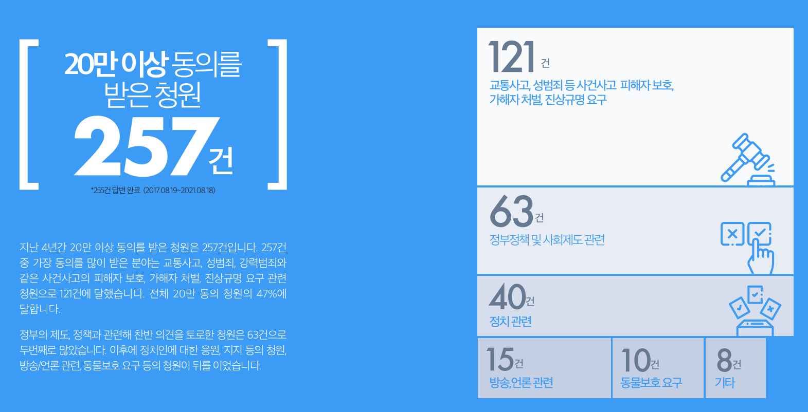
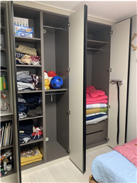

<SURFER>는 ‘청와대 국민청원'에서 답을 찾았습니다. 국민 청원에 올라온 게시판을 분석해 지난 정부의 5년을 추적해보고자 합니다. 5년 동안 올라왔던 청원을 범주화해 국민이 변화를 가장 원했던 분야는 무엇이었는지, 그리고 청원에서 해결하지 못한 메시지는 무엇이었는지 살펴봅니다. 대한민국을 이끌어갈 다음 주자가 놓치고 있던 문제에 대한 해결책을 준비하고 있을까요?
- 데이터 수집 기간을 청와대 국민청원이 시작된 2017년 8월 19일부터 2021년 12월 31일로 설정한 후, 웹크롤링을 통해 국민청원 사이트에 접속해 ‘분야’, ‘청원 제목’, ‘청원 시작일’, ‘청원 마감일’, ‘참여 인원’을 수집했다.
- 2019년 3월 31부터는 국민청원 시스템이 100명의 사전동의를 얻어야 글을 게시할 수 있도록 개편됨에 따라 2017-2018년 또한 청원 수가 100명 이상인 데이터만 수집했다.
- 데이터분석과 시각화는 R과 Python을 통해 진행했다.

-
2018년 4월 ‘삼성증권 시스템 규제와 공매도 금지’ 청원
삼성증권이 우리사주조합원에게 한 주당 1,000원을 배당해야 할 것을 한 주당 1천주씩 배당하여 주식 거래 시스템 개편과 공매도 제도를 금지에 대한 목소리를 담은 청원이 잇따라 올라왔다. -
2018년 10월 ‘국민연금 주식 대여 금지’ 청원
국내 대표 공적 연기금인 ‘국민연금’과 ‘우정사업본부’가 2008년 이후 10년간 주식을 빌려주고 벌어들인 수수료가 공개되면서, 이러한 주식 대여가 공매도로 이어져 개인투자자들의 피해와 국민연금의 수익 악화로 이어진다는 비판이 담긴 국민청원이 게시되었다.
-
2018년 10월 ‘카풀 서비스 사업 반대’ 청원
2018년 10월 모바일 앱을 통해 카풀(car-pool)을 중개하는 플랫폼 기업이 등장하자, 택시업계를 포함한 많은 국민들이 열악한 택시 종사자의 여건이 더욱 악화되고, 일자리가 사라질 것이라는 염려의 목소리를 국민청원에 담아냈다. -
2020년 7월 ‘617 & 710 부동산 대책’ 관련 청원
정부가 주택 가격 안정화를 위해 한 달 간격으로 번복해서 발표한 부동산 대책에 대한 국민청원이 빠르게 증가했다. 특히 정부가 부동산에 징벌적 과세를 한다는 비판과 함께 소급적용에 대한 우려가 컸다.
-
2018년 4월 ‘대한한공 항공사명 회수’ 청원
전 ‘대한항공’ 전무 조현민의 물컵 갑질 사건이 논란이 되면서 ‘대한한공’이라는 항공사명을 회수하자는 국민 청원이 폭발적으로 급증했다. -
2018년 4월 ‘다산신도시 실버택배 반대’ 청원
다산 신도시의 한 아파트에서 후진하는 택배 차량에 아이가 치일 뻔한 사고가 발생하자 입주민들이 단지 내 택배 차량의 출입을 막았다. 택배회사들은 이에 반발해 단지 입구에 배송물을 쌓아 두고 돌아갔으며 이에 국토교통부가 중재에 나서 ‘실버 택배’를 도입하겠다고 나섰으나, 여기에 국민 세금이 투입된다는 사실이 알려지면서 청원이 제기되었다. - 2020년 3월 ‘코로나19로 인한 소상공인 재정난 해소’ 청원
-
2018년 2월 : ‘평창올림픽 대한민국 여자 팀추월 경기’ 관련 청원
평창올림픽 여자 팀추월 경기에 출전한 대한민국 선수들이 서로 거리를 좁히지 못하면서 준결승 진출이 무산되었다. 이후 집단 따돌림 논란과 함께 빙상 연맹의 미숙한 행정에 대한 국민의 분노가 고조되면서 선수 출전 중단, 빙상연맹 감사를 요구하는 청원이 급증했다. -
2018년 4월 : ‘전 대한빙상경기연맹 전명규 전 부회장 파면’ 청원
‘그것이 알고싶다’가 빙상계 적폐 논란을 부른 전명규 교수의 실세를 보도하면서 대한빙상경기연맹 부회장 보직에서 사퇴, 한국체대 교수 파면에 대한 국민청원 여럿 게시되었다.
- 2020년 2-3월 ‘코로나 바이러스 확산 방지를 위한 해외 입출국 금지 & 전국 신천지 교회 폐쇄 & 마스크 공급 및 지원’ 청원
-
2021년 12월 ‘백신 패스 도입 반대’ 청원
정부가 도입한 방역패스 정책과 관련해 돌파 감염이 많아 백신을 맞고서도 안심할 수 없다는 점, 정부가 추가 접종을 요구하는 점, 미접종자의 일상생활에 불이익이 생기는 점 등을 우려해 백신 패스 도입을 반대하는 청원들이 폭발적으로 급증했다.
-
2018년 5월 ‘광주 폭력조직의 집단 폭행 사건 엄벌’ 청원
광주 광산구 일대 한 도로에서 폭력조직 소속 남성 8명이 30대 남성을 집단폭행하여 사실상 실명 등 피해를 입힌 사건이 발생했다. 당시 현장에 경찰관이 출동했지만, 가해 남성들을 즉각 제압하지 않아 소극적으로 대응했다는 논란이 일어 이를 엄벌해달라는 국민청원이 제기되었다. - 2018년 10월 ‘강서구 PC방 아르바이트생 살인사건 강경처벌’ 청원
-
2020년 2월 ‘코로나19 확산 방지’ 청원
코로나19의 확산으로 중국발 입국자 입국 금지, 마스크 가격 안정화, 확진자 동선 공개 요청, 신천지 압수수색 요청 등을 요청하는 국민청원이 끊이질 않았다.
-
2018년 2월 ‘천안함 사건 재조사’ 청원
평창 동계올림픽에 대표단으로 북한 김영철 노동당 부위원장이 방남하기로 하자, 아직 천안함의 배후를 명확히 밝히지 못했다며 제기된 청원이다. -
2018년 7월 ‘제주 예멘 난민 수용 반대’ 청원
내전을 피하기 위해 예멘에서 500여명의 난민이 제주도에 오자, 치안 불안과 난민 불인정 등을 이유로 난민법 폐지와 난민 추방 청원이 제기되었다.
-
2018년 7월 ‘어린이집 아동학대 근절’ 청원
서울 강서구 어린이집에서 보육교사 김씨가 원생 5명에 대해 잠을 재운다며 이불을 머리까지 씌운 채 10회 이상 팔과 다리로 눌렀고, 영아 1명이 사망하는 사고가 발생했다. 뿐만 아니라, 서울 도봉구 어린이집에서도 아동학대 사실이 발견돼 국민적 공분을 샀다. -
2018년 10월 ‘사립유치원 비리 조사’ 청원
박용진 더불어민주당 의원이 사립유치원 비리 근절을 해결하기 위해 마련한 정책토론회가 유치원 단체의 집단행동으로 아수라장으로 변했고, 이달 말 박 의원이 공개한 사립유치원 회계비리에서는 비리 규모가(당시) 최근 5년간 16,122건(382억원)으로 드러났다. - 2020년 3월 ‘코로나로 인한 개학 연기 요구’ 청원
-
2018년 5월 홍대 누드 크로키 모델 불법 촬영 관련 청원
초반 누드 크로키 모델을 불법 촬영하여 유포한 자를 처벌해달라는 청원이 주를 이뤘으나, 수사가 빠르게 진행되자 이윽고 여태까지 불법 촬영을 일삼은 많은 몰카범을 수사하지 못한 게 아니라 않은 것 아니냐는 청원이 많은 동의를 얻었다. -
2018년 10월 위디스크 양진호 회장 처벌 청원
과거 국내 웹하드 업계 1·2위인 ‘위디스크’와 ‘파일노리’의 실소유주인 양진호 전 한국미래기술 회장이 디지털성범죄에 연루 (각종 음란물과 리벤지 포르노 파일 등을 통해 막대한 부를 축적)돼 경찰 수사를 받고 있는 와중, 전직 직원을 무차별 폭행한 영상이 폭로돼 처벌 여론이 들끓었다.
-
2017년 9월 ‘난임 부부 지원 대책 마련’ 청원
2017년 10월부터 난임 치료 시술에 건강보험이 적용되어 본인 부담금이 낮아질 전망이었으나, 그 횟수가 제한되어 지원이 한정적이라는 지적이 나왔다. 이 때문에 난임 지원 횟수 제한을 폐지해달라는 청원이 제기되었다.
-
2018년 4월 국회의원 해외연수 전수조사 청원
김기식 금융감독원장이 국회의원 시절 인턴 비서와의 ‘로비성 해외 출장’으로 논란을 빚었는데, 여기에 의원 임기 말 해외 출장이 추가로 논란이 되어 국회의원 해외연수를 전수조사 해야한다는 청원이 발생했다. -
2018년 5월 ‘국회의원 불체포특권 폐지 및 기명투표실시’ 청원
국회는 국회의원의 불체포특권을 이유로 홍문종·염동열 의원에 대한 체포 동의안을 상정했지만, 무기명으로 실시된 투표에서 부결되었다. 이 때문에 ‘제 식구 감싸기’라는 비판이 나왔고, 국회의원 불체포특권을 폐지하고 기명투표를 실시해야 한다는 청원이 빗발쳤다.
-
2018년 ‘4월 다산 신도시 택배 지원 사업 반대’ 청원
다산 신도시의 한 아파트에서 후진하는 택배 차량에 아이가 치일 뻔한 사고가 발생하자 입주민들이 단지 내 택배 차량의 출입을 막았다. 택배회사들은 이에 반발해 단지 입구에 배송물을 쌓아 두고 돌아갔으며 이에 국토교통부가 중재에 나서 ‘실버 택배’를 도입하겠다고 나섰으나, 여기에 국민 세금이 투입된다는 사실이 알려지면서 청원이 제기되었다. -
2020년 3월 ‘코로나19’ 관련 청원
코로나19로 피해를 본 소상공인 등을 위한 정책적 지원 촉구하고 대구 경북 지역을 특별재난지역 선포하기를 요청하는 등의 청원이 주를 이뤘다.
청소년 디지털 성범죄, 화살은 어디로 향해야 하는가
디지털 성범죄 청원 합계 1위
11가지로 세분화한 주제에서 청원 합계 1위는 ‘디지털 성범죄'였다. <SURFER>는 ‘국민들이 가장 많이 동의한 분야’라는 스포트라이트에 가려져 외면 받은 문제를 찾아보기로 했다.하지만 <SURFER>는 여성가족부가 지난해 공개한 '아동·청소년 대상 성범죄 발생 추세와 동향 분석' 보고서에서 지난 2019년 집계된 디지털 성범죄 피해 아동 ·소년은 총 505명으로, 오히려 전년(251명) 대비 2배 이상 늘었다는 사실을 발견했다. 따라서 처벌 강화와 피해자 보호가 디지털 성범죄의 해결책으로 작용하고 있는지 살펴봐야했다.
11가지로 세분화한 ‘인권/성평등’ 항목에서 디지털 성범죄의 뒤를 잇는 건 미성년자 대상 성범죄가 아닌 청소년 범죄였다. 미성년자 대상 성범죄는 7위를 차지했다. 디지털 성범죄 피해자의 과반을 차지하는 미성년자인데도 미성년자 대상 성범죄가 아닌 청소년 범죄가 더 많았다. 그 이유는 미성년자 대상 성범죄 가해자의 대다수가 청소년, 미성년자였기 때문이다. 광주해바라기센터가 2005년부터 2019년까지 아동·청소년 대상 성범죄 가해자 연령대를 조사한 결과 2015년부터 2019년까지 63.6%가 미성년자였다.
그러나 가해자 다수가 ‘청소년’임을 고려한 디지털 성범죄 예방, 처벌 강화 법안은 만들어지지 않았다. 이에 청소년 가해자의 특성을 고려해 미성년자 대상 디지털 성범죄를 근본적으로 해결할 수 있는 방법을 살펴보기로 했다.
소년이 소년에게 저지르는 디지털 성범죄
‘디지털 성범죄’로 세분화된 49개 청원에서 (가해자-성인)이고 (피해자-미성년자)인 청원은 9개, (가해자-미성년자), (피해자-미성년자)인 ‘청소년 범죄’ 74개 중에서 청소년 성범죄는 35개. 그 35개 중 디지털 성범죄는 17개이다.| ‘청소년 범죄' 청원 동의 수 순위 | 내용 |
|---|---|
| 1위(354,935 명) | 19세 남자 3명과 15살 또래 남학생 4명이 15살 여자이를 집단 성폭행함. 이 과정에서 피해자는 사진을 찍음. 가해자는 SNS에 성관계를 가졌다는 허위사실 유포. |
| 3위(250,092 명) | 06년생으로 추정되는 다수의 인원들이 한 여학생을 폭행한 영상이 SNS에 올라옴. 영상 속 피해자는 출혈이 심함. |
| 4위(234,236 명) | 남자 중학생 2명이 친구로 지내오던 여자 중학생을 화장실로 데려가 강간(초등학교 졸업 후). SNS를 통해 피해자에게 성희롱 발언도 일삼음. |
| 5위(217,786 명) | 여자 고등학생이 알코올 과다 치사로 사망. 친구들이 술자리에서 술을 강권했음. 가해자들은 취한 피해자를 강간하고 신체 사진을 찍고 성관계 동영상 촬영. |
| 7위(208,202 명) | 고등학교 2학년 피해자는 SNS를 통해 또래에게 살인 협박을 받음. 이후 피해자는 옷이 다 벗겨진채 중고생 선후배 8명으로부터 집단 폭행을 당함. |
'청소년'이라는 과녁에 꽂히는 화살들
‘청소년 범죄' 청원 동의 수 상위 10개 청원 중 4개는 ‘소년법 폐지'와 미성년 범죄자 형량 강화를 요구하는 글이었다.이에 서울 소년원장으로 재직했던 한영선 경기대학교 경찰학과 교수는 청소년 범죄에 대해 처벌을 강화한다고 해서 범죄를 근절할 수 없다고 말했다.
청원에 나타난 엄벌주의적 논의 방향으로는 근본적인 해결 방안을 제시할 수 없다. 그렇다면 미성년자 대상 디지털 성범죄를 해결하는 방법을 제시하는 대선 후보는 누구일까. 그리고 그 근본적인 해결 방법은 무엇일까.
청소년 디지털 성범죄 근절을 위한 '정조준'
청소년 디지털 성범죄의 근본적인 해결법을 찾기 위해 5명의 취재진을 만나 인터뷰했다. 전 소년원장 경기대학교 경찰행정학과 한영선 교수와 전주대학교 경찰학과 노성호 교수, 시립아하!청소년성문화센터 강자겸 팀장, 부천시 청소년법률지원센터 센터장 윤정은 변호사, 마지막으로 경기도소재 고교 선생님을 만났다.
물 한 모금도 얻기 어려운 황무지에 씨앗을 뿌려놓고
타박하는 꼴이 아닐까?
"당신께 테이프를 전달하며"
전문가들은 청소년 디지털 성범죄를 근절할 수 있는 근본적인 해결방안으로 ‘안정적인 돌봄체계의 구축과 성 관련 공교육을 강화’로 입을 모았다.
그렇다면 20대 대선 후보가 내놓은 돌봄과 성교육 및 인권 교육 공약은 무엇이 있을까.
20대 대통령 후보의 대표적인 아이 돌봄 공약과 성교육 및 인권 교육 공약을 정리했다.
20대 대선 후보에게 묻는 ‘아이돌봄’ 공약
“전 국민 디지털 성범죄 예방교육을 실시해 성에 대한 인식을 개선하고, 디지털 문화를 인권 존중 문화로 만들겠다”
공약 페이지
공약 페이지
공약 페이지
“디지털 성범죄를 대응하기 위해 🟢 성폭력 예방 교육에 디지털 성범죄 예방 교육을 추가하고 🟢청소년 대상 디지털 성범죄 교육을 확대하겠다. 🟢초중고 공교육 과정에서 성평등 교육과 성차별, 성폭력 젠더감수성 교육을 체계화하고 🟢초등학교부터 대학교까지 공공기관 인권교육을 의무화하겠다."
공약 페이지
[장애인 탈시설의 딜레마]
북을 칠 수 없는 사람들
‘국민이 물으면 정부가 답한다’는 국민청원, 그 안에서도 빛과 그늘은 존재한다. 중대한 사안일수록, 보편적 이슈일수록 20만 동의라는 목표는 빠르게 달성된다. 세상이 주목하지 않은 이들의 절규를 찾아 1만 이상 동의를 받은 5년간의 청원 2,701건을 분석했다. 성범죄, 정치 개혁 등 소위 ‘인기 카테고리’는 최소 한 번씩 답변을 받았으며 물론 이 역시 중요한 사안임에는 뜻을 같이한다.
다만, 대궐 밖에 신문고가 달려도 북을 치러 갈 수조차 없는 이들이 있다. 분석 결과, 5년간의 국민청원에서 ‘장애인’에 관한 답변은 찾아볼 수 없었다. 애초에 1만 이상의 동의를 받은 청원조차 손에 꼽힌다.
6,937건
그중, 1만 이상 동의는
11건
장애인 ‘생활권’ 관련 청원
3건(총합 약 6만 명 동의)
주거(住居) : 일정한 곳에 머물러 삶. 또는 그런 집.
위 청원들은 모두 장애인의 생활권에 대해 논한다. 빠지지 않는 개념은 ‘탈시설’, 말 그대로 장애인의 시설 수용을 탈피하는 것이다. 궁극적으로는 장애인이 지역 사회에서 자립 생활을 영위할 수 있도록 필요한 서비스를 제공하는 것이다. 혹자는 탈시설 대신 ‘장애인 자립 생활’이라는 용어를 써야 한다고 일컫기도 한다.2020년 기준 전국에 있는 장애인 거주시설은 총 1,539개, 거주 인원은 2만 9천여 명이다. 중증장애인과 발달장애인의 비율이 각각 98%, 80%를 차지한다. 거주자들의 탈시설 욕구는 어느 정도 일까. 2020년 9월부터 5개월간 한국장애인개발원이 6,035명의 시설 거주 장애인들을 대상으로 한 설문조사 결과, 시설에서 ‘나가고 싶지 않다’는 응답이 약 60%, ‘나가고 싶다’는 응답은 약 33%를 차지했다. 탈시설을 비 희망한 장애인은 중증장애인(약 62%), 지적장애인(약 60%), 청각언어장애인(약 51%) 순으로 높은 비율을 차지했다.
시설 밖으로 나가고 싶지 않은 이유는 무엇일까. 동일 자료(복수응답 허용)에 따르면 ‘이곳에 사는 것이 좋아서’라는 답변이 약 70%, ‘나가서 어떻게 살아야 할지 몰라서’라는 답변이 약 22%, ‘경제적 자립 자신 없음’의 답변이 약 15%를 차지했다. 긍정적 답변이 압도적 비율을 차지했으나 부정적 답변, 그리고 향후 변화가 가능할 답변에 초점을 맞춰 취재를 진행했다.
자립에 대한 불안감과 넉넉지 못한 재정 상황을 지닌 이들에게 정책은 제대로 작동하고 있을까? 문재인 정부는 임기 초 100대 국정과제 중 42번째로 장애인 탈시설을 선정했다. 2018년 하반기 발표로 예정됐던 ‘장애인 지역사회 자립지원에 관한 로드맵’은 임기를 1년도 채 남기지 않은 작년 8월에 발표됐다.
주요 내용은 탈시설 장애인이 독립생활을 영위할 수 있도록 물리적 거주공간과 복지서비스를 결합 지원한다는 것이다. 정부는 거주시설의 신규개소를 금지하고 기존 시설은 변환하며 2024년까지 시범사업을 추진해 2041년에는 완전히 거주 전환을 마무리할 계획이다. 저소득·취약계층 장애인에게는 공공임대 주택인 ‘장애인 지원주택’이 제공된다. 지원주택에서는 주거 관리 뿐 아니라 생활 관리 전반에 대한 서비스가 이루어진다. 작년 9월 말 기준 서울시 7개 자치구에 장애인지원주택 127호가 자리하고 있으며 입주인은 131명이다.
시설 밖 사람들
“혼자 아침 차려 먹고 옆집 석희 만나요”



함께 만난 성민장애인지원주택 안은정 사회복지사는 “활동지원사 전문성 강화와 개인 맞춤형 지원이 중요하다”고 강조했다. 중증장애인은 자립 생활이 더욱 어렵기에 활동지원사의 역량이 뒷받침되어야 한다는 것이다. 그는 “활동지원사 전문성 강화 이후 24시간 지원 체계가 이루어져야 한다”고 말하기도 했다. 마지막으로 안 씨는 “지원주택이 물리적 공간보다 정서적 공간이 되는 게 중요하다”며 “장애 유형과 정도, 특성을 고려한 맞춤형 지원이 이뤄져야 한다”고 설명했다.
지원주택 방문 이후, 온전히 독립해 임대주택서 거주 중인 장애인도 만나봤다. 추경진(55세, 척수손상 지체장애)씨는 30대 초반에 교통사고로 척수가 손상돼 15년간 시설에 거주하다 지난 2016년 퇴소했다. 그는 “장애를 얻은 1997년 당시 저상버스는 물론 활동지원제도조차 없어 후천적 장애인이었음에도 시설에 들어갈 수밖에 없었다”고 말했다. 그는 손과 발을 자유롭게 쓸 수 없고 전동휠체어로만 이동할 수 있으며 하루 대부분을 활동지원사와 함께한다. 추 씨는 “24시간 활동지원과 거주지 선택권 보장을 바란다”고 말했다. 탈시설을 했더라도 거주했던 시설과 동일한 지역에 살아야 활동 지원 등을 원활히 받을 수 있기 때문이다.
시설 안 사람들
“환갑이 된 제가, 아들을 잘 키울 수 있을까요”
최 씨는 “환갑이 되다 보니 허리가 많이 안 좋다. 집에서는 서른아홉 먹은 아들을 씻기기도 힘든데 이곳에서는 일대일 돌봄이 제공된다”고 반색했다. 또, “여름엔 덥고 겨울엔 추운 집보다 쾌적한 시설에서 아들이 친구들과 함께 어울려 지내니 마음이 놓인다”라고 덧붙였다. 최 씨는 장애 유형에 맞는 자립 지원은 물론, 아들이 곧 마흔이 되는 만큼 “노인이 된 발달장애인들이 거주할 수 있는 장애인 요양 시설이 필요하다”고 강조했다.
함께 만난 둘다섯해누리 시설장 이기수 신부는 “탈시설의 취지에는 공감하나 시설에 대한 전면적 부정은 이해하기 어렵다”고 밝혔다. 시설 폐쇄 이전에 지역사회 내에서 장애인과 함께 살아갈 준비를 마쳐야 한다는 것이다. 그는 “발달장애인은 폭력적 행동과 고함이 자연스러운 일이다. 우리 사회는 옆집에 이들이 살아도 용인할 수 있는 분위기인가”라며 물었다. 이 신부는 탈시설 정책에 대해 “문제는 ‘낙후된 폐쇄적 시설’이다. 시설을 질적으로 보강하고 그사이에 지역사회는 장애인 자립 생활을 위한 인프라를 구축해야 한다”고 지적했다. 실제로 둘다섯해누리에는 2,3인이 한 방을 쓰는 시설과 각방을 사용하고 거실에 나와 함께 담소를 나누는 그룹홈이 자리하고 있다. 그룹홈은 소규모의 장애인이 공동으로 생활하는 가정이다. 야외에는 수영장과 미로공원, 산책로도 조성되어 있다.
이 신부는 장애 유형별 다양한 주거 형태를 강조했다. 대형 시설을 소형화하거나 시설 내 독립적 공간을 구축하는 게 자립이 불가한 중증발달장애인들의 자립을 돕는 실질적 방안이라는 것이다. 마지막으로 그는 “사고가 발생할 수밖에 없는 시스템을 개선해야 한다”고도 주장했다. 한 사람당 수많은 사람을 맡는 현 돌봄 구조와 인력에 대한 처우 개선이 시설에서 발생하는 각종 사고를 막을 수 있다는 것이다.
선택권은 장애인 손에 쥐어져야
탈시설의 딜레마는 해결될 수 있을까. ‘장애인 탈시설의 법체계 개선 방안(2021.02)’에 관해 논문을 쓴 유동철 동의대 사회복지학과 교수와 만나 이야기를 나눴다. 그는 “장애인 거주에는 세 가지 권리가 실현되어야 한다”고 말했다. 거주 공간을 선택할 권리, 동거인을 선택할 권리, 자유의지에 따라 생활을 유지할 권리이다. 그는 국내 대부분 시설에서 세 가지 권리가 충족되고 있지 않은 것과 서비스 수혜자가 상대적으로 을에 위치한 점을 지적했다.탈시설에 관해서는 “장애의 중증과 경증을 따지기보다 의료나 요양이 필요한지를 판단해 별도의 기관을 구축해야 한다”고 설명했다. 유 교수는 활동 지원부터 야간 응급지원까지 연계되는 24시간 지원 시스템과 지원주택, 임대주택, 공동체 주택 등 다양한 장애인 주거 공간 확충의 필요성도 강조했다. 또한, 지역사회 이전부터 안정적 자립까지 지속해서 지원하는 “자립생활 전환 센터(탈시설 센터)의 역할이 중요하다”고 설명하며 “광역자치단체마다 센터가 만들어져야 한다“고 강조했다.
마지막으로 그는 돌봄을 온전히 가족의 책임으로 맡겨뒀던 현 사회의 시스템을 지적했다. 국가가 약자를 돌보는 돌봄의 탈 가족화·사회화가 필요하다는 것이다. 결국 탈시설에 있어 가장 중요한 것은 자기 결정권이다. 유 교수는 “탈시설이 지역사회로 몸만 옮기는 것이 아니라, 본인이 선택하고 통제할 수 있는 방향에 대해 합의하는 과정까지 포함되어야 한다”고 주장했다.
"당신께 테이프를 전달하며"
각 대선 후보들의 공약을 분석한 후 국민청원의 이야기를 담고 있는지 현황을 파악하며 마무리한다.
20대 대선 후보에게 묻는 ‘탈시설’ 관련 공약
공약 페이지
공약 페이지